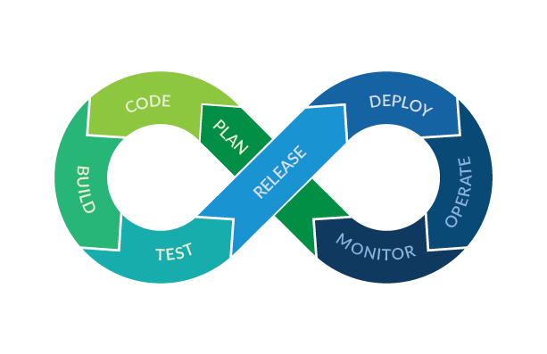
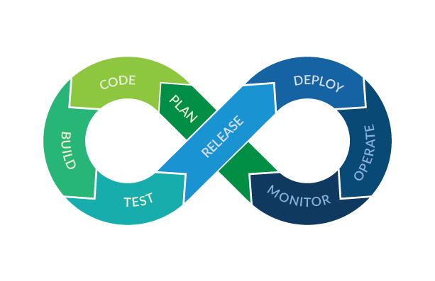

Dynamic Cloud & DevOps Engineer skilled in AWS, CI/CD, Docker, Kubernetes, Terraform, and Ansible. Experienced in deploying scalable cloud architectures and automating workflows to improve efficiency and reliability. Passionate about cloud automation, Infrastructure as Code (IaC), and continuous integration — driven to deliver secure, optimized, and innovative DevOps solutions.


 



Deployed a 3-tier architecture using EC2, RDS, and VPC for secure, scalable deployment, Configured IAM, Security Groups for access control and system protection, Integrated AWS SES for automated email confirmations.
View on GitHubBuilt a AI-powered chatbot with disaster recovery architecture to ensure data reliablity, Deployed in EC2, VPC, RDS across multiple AWS regions for high availability.
View on GitHubGained hands-on experience with AWS services and automation using Jenkins, Ansible, Docker & Kubernetes.
Dr. N.G.P Arts and Science College, Coimabtore | 2022-2025
Certified in AWS-DevOps Issued by FITA Academy | 2025